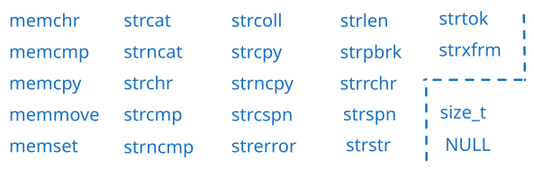

strlen 通过检查'\0'判断长度
可以把字符串中的某一位变成'\0'来提前截断字符串
/* test_fit.c -- try the string-shrinking function */
#include <stdio.h>
#include <string.h> /* contains string function prototypes */
void fit(char *, unsigned int);
int main(void)
{
char mesg[] = "Things should be as simple as possible,"
" but not simpler.";
puts(mesg);
fit(mesg, 38);
puts(mesg);
puts("Let's look at some more of the string.");
puts(mesg + 39);
return 0;
}
void fit(char *string, unsigned int size)
{
if (strlen(string) > size)
string[size] = '\0';
}
// (base) kimshan@MacBook-Pro output % ./"test_fit"
// Things should be as simple as possible, but not simpler.
// Things should be as simple as possible
// Let's look at some more of the string.
// but not simpler.
把第二个拼在第一个后边
/* str_cat.c -- joins two strings */
#include <stdio.h>
#include <string.h> /* declares the strcat() function */
#define SIZE 80
char *s_gets(char *st, int n);
int main(void)
{
char flower[SIZE];
char addon[] = "s smell like old shoes.";
puts("What is your favorite flower?");
if (s_gets(flower, SIZE))
{
strcat(flower, addon);
puts(flower);
puts(addon);
}
else
puts("End of file encountered!");
puts("bye");
return 0;
}
char *s_gets(char *st, int n)
{
char *ret_val;
int i = 0;
ret_val = fgets(st, n, stdin);
if (ret_val)
{
while (st[i] != '\n' && st[i] != '\0')
i++;
if (st[i] == '\n')
st[i] = '\0';
else // must have words[i] == '\0'
while (getchar() != '\n')
continue;
}
return ret_val;
}
// (base) kimshan@MacBook-Pro output % ./"str_cat"
// What is your favorite flower?
// sunflower
// sunflowers smell like old shoes.
// s smell like old shoes.
// bye
strcat 无法检查第一个数组是否能容纳第二个数组，如果数组 1 不够大，就会溢出影响旁边存储的内容！
/* join_chk.c -- joins two strings, check size first */
#include <stdio.h>
#include <string.h>
#define SIZE 30
#define BUGSIZE 13
char *s_gets(char *st, int n);
int main(void)
{
char flower[SIZE];
char addon[] = "s smell like old shoes.";
char bug[BUGSIZE];
int available;
puts("What is your favorite flower?");
s_gets(flower, SIZE);
if ((strlen(addon) + strlen(flower) + 1) <= SIZE)
strcat(flower, addon);
puts(flower);
puts("What is your favorite bug?");
s_gets(bug, BUGSIZE);
available = BUGSIZE - strlen(bug) - 1;
strncat(bug, addon, available);
puts(bug);
return 0;
}
char *s_gets(char *st, int n)
{
char *ret_val;
int i = 0;
ret_val = fgets(st, n, stdin);
if (ret_val)
{
while (st[i] != '\n' && st[i] != '\0')
i++;
if (st[i] == '\n')
st[i] = '\0';
else // must have words[i] == '\0'
while (getchar() != '\n')
continue;
}
return ret_val;
}
// (base) kimshan@MacBook-Pro output % ./"join_chk"
// What is your favorite flower?
// 1123456789098765432134567890
// 1123456789098765432134567890
// What is your favorite bug?
// qwertyuiokjhgfdscvvbnm
// qwertyuiokjh
// (base) kimshan@MacBook-Pro output % ./"join_chk"
// What is your favorite flower?
// sunflower
// sunflower
// What is your favorite bug?
// overflow
// overflows sm
// (base) kimshan@MacBook-Pro output % ./"join_chk"
// What is your favorite flower?
// 1
// 1s smell like old shoes.
// What is your favorite bug?
// 2
// 2s smell lik
进行字符串比较
/* compback.c -- strcmp returns */
#include <stdio.h>
#include <string.h>
int main(void)
{
printf("strcmp(\"A\", \"A\") is ");
printf("%d\n", strcmp("A", "A"));
printf("strcmp(\"A\", \"B\") is ");
printf("%d\n", strcmp("A", "B"));
printf("strcmp(\"B\", \"A\") is ");
printf("%d\n", strcmp("B", "A"));
printf("strcmp(\"C\", \"A\") is ");
printf("%d\n", strcmp("C", "A"));
printf("strcmp(\"Z\", \"a\") is ");
printf("%d\n", strcmp("Z", "a"));
printf("strcmp(\"apples\", \"apple\") is ");
printf("%d\n", strcmp("apples", "apple"));
return 0;
}
// (base) kimshan@MacBook-Pro output % ./"compback"
// strcmp("A", "A") is 0
// strcmp("A", "B") is -1
// strcmp("B", "A") is 1
// strcmp("C", "A") is 1
// strcmp("Z", "a") is -1
// strcmp("apples", "apple") is 1
限定找前n 个字符
/* starsrch.c -- use strncmp() */
#include <stdio.h>
#include <string.h>
#define LISTSIZE 6
int main()
{
const char *list[LISTSIZE] = {
"astronomy",
"astounding",
"astrophysics",
"ostracize",
"asterism",
"astrophobia",
};
int count = 0;
int i;
for (i = 0; i < LISTSIZE; i++)
if (strncmp(list[i], "astro", 5) == 0)
{
printf("Found: %s\n", list[i]);
count++;
}
printf("The list contained %d words beginning"
" with astro.\n",
count);
return 0;
}
// (base) kimshan@MacBook-Pro output % ./"starsrch"
// Found: astronomy
// Found: astrophysics
// Found: astrophobia
// The list contained 3 words beginning with astro.
字符串拷贝
/* copy1.c -- strcpy() demo */
#include <stdio.h>
#include <string.h> // declares strcpy()
#define SIZE 40
#define LIM 5
char *s_gets(char *st, int n);
int main(void)
{
char qwords[LIM][SIZE];
char temp[SIZE];
int i = 0;
printf("Enter %d words beginning with q:\n", LIM);
while (i < LIM && s_gets(temp, SIZE))
{
if (temp[0] != 'q')
printf("%s doesn't begin with q!\n", temp);
else
{
strcpy(qwords[i], temp);
i++;
}
}
puts("Here are the words accepted:");
for (i = 0; i < LIM; i++)
puts(qwords[i]);
return 0;
}
char *s_gets(char *st, int n)
{
char *ret_val;
int i = 0;
ret_val = fgets(st, n, stdin);
if (ret_val)
{
while (st[i] != '\n' && st[i] != '\0')
i++;
if (st[i] == '\n')
st[i] = '\0';
else // must have words[i] == '\0'
while (getchar() != '\n')
continue;
}
return ret_val;
}
// (base) kimshan@MacBook-Pro output % ./"copy1"
// Enter 5 words beginning with q:
// qwert
// qazwsx
// qwererty
// qqq
// q
// Here are the words accepted:
// qwert
// qazwsx
// qwererty
// qqq
// q
因为第一个参数是指针，所以我们可以从某个位置开始加入新字符。
/* copy2.c -- strcpy() demo */
#include <stdio.h>
#include <string.h> // declares strcpy()
#define WORDS "beast"
#define SIZE 40
int main(void)
{
const char *orig = WORDS;
char copy[SIZE] = "Be the best that you can be.";
char *ps;
puts(orig);
puts(copy);
<strong> ps = strcpy(copy + 7, orig);
</strong> puts(copy);
puts(ps);
return 0;
}
// (base) kimshan@MacBook-Pro output % ./"copy2"
// beast
// Be the best that you can be.
// Be the beast
// beast
/* copy3.c -- strncpy() demo */
#include <stdio.h>
#include <string.h> /* declares strncpy() */
#define SIZE 40
#define TARGSIZE 7
#define LIM 5
char *s_gets(char *st, int n);
int main(void)
{
char qwords[LIM][TARGSIZE];
char temp[SIZE];
int i = 0;
printf("Enter %d words beginning with q:\n", LIM);
while (i < LIM && s_gets(temp, SIZE))
{
if (temp[0] != 'q')
printf("%s doesn't begin with q!\n", temp);
else
{
strncpy(qwords[i], temp, TARGSIZE - 1);
qwords[i][TARGSIZE - 1] = '\0';
i++;
}
}
puts("Here are the words accepted:");
for (i = 0; i < LIM; i++)
puts(qwords[i]);
return 0;
}
char *s_gets(char *st, int n)
{
char *ret_val;
int i = 0;
ret_val = fgets(st, n, stdin);
if (ret_val)
{
while (st[i] != '\n' && st[i] != '\0')
i++;
if (st[i] == '\n')
st[i] = '\0';
else // must have words[i] == '\0'
while (getchar() != '\n')
continue;
}
return ret_val;
}
// (base) kimshan@MacBook-Pro output % ./"copy3"
// Enter 5 words beginning with q:
// q1
// q12
// q12345
// q1234567
// q1234567890
// Here are the words accepted:
// q1
// q12
// q12345
// q12345
// q12345
has C++ demo links[2]
| Copying - function | Description |
|---|---|
| memcpy | Copy block of memory (function) |
| memmove | Move block of memory (function) |
| strcpy | Copy string (function) |
| strncpy | Copy characters from string (function) |
| Concatenation - function | Description |
|---|---|
| strcat | Concatenate strings (function) |
| strncat | Append characters from string (function) |
| Comparison | Description |
|---|---|
| memcmp | Compare two blocks of memory (function) |
| strcmp | Compare two strings (function) |
| strcoll | Compare two strings using locale (function) |
| strncmp | Compare characters of two strings (function) |
| strxfrm | Transform string using locale (function) |
| Concatenation - function | Description |
|---|---|
| strcat | Concatenate strings (function) |
| strncat | Append characters from string (function) |
| Searching - function | Description |
|---|---|
| memchr | Locate character in block of memory (function) |
| strchr | Locate first occurrence of character in string (function) |
| strcspn | Get span until character in string (function) |
| strpbrk | Locate characters in string (function) |
| strrchr | Locate last occurrence of character in string (function) |
| strspn | Get span of character set in string (function) |
| strstr | Locate substring (function) |
| strtok | Split string into tokens (function) |
| Others - function | Description |
|---|---|
| memset | Fill block of memory (function) |
| strerror | Get pointer to error message string (function) |
| strlen | Get string length (function) |
| Macros | Description |
|---|---|
| NULL | Null pointer (macro) |
| Types | Description |
|---|---|
| size_t | Unsigned integral type (type) |
[1] https://www.runoob.com/cprogramming/c-standard-library-string-h.html